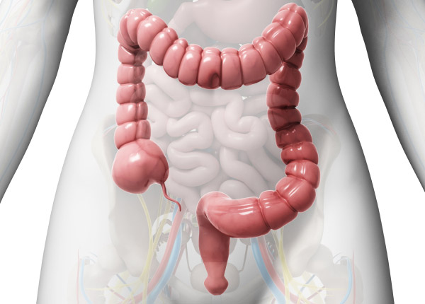

What is IBD?
Information on Inflammatory Bowel Disease
Inflammatory Bowel Disease (IBD) is a term that describes all diseases that cause chronic inflammation of the digestive tract including the intestines. IBD can be painful and debilitating, and sometimes leads to more serious complications.

IBD includes both Ulcerative Colitis and Crohn’s Disease.
Ulcerative Colitis (UC) is an inflammation of the mucosal tissue in the colon which reaches from the rectum to the large intestine. A patient with UC will experience symptom flares and incidences of remission.
Crohn’s Disease (CD) is an inflammation that can affect all or any part of the gastrointestinal tract.
An estimated 175,000 IBD cases are diagnosed in Canada and Canada has the highest worldwide in incidence of CD.
What Causes IBD?
Although the direct cause of IBD hasn’t been determined, it may be a disorder of diet, toxins, or an imbalance of bacteria in the gut (gut flora). Many healthcare professionals believe it is not transmissible from person to person.
The human digestive tract naturally contains a balance of good and bad human flora or microbiota to aid in digestion. When this delicate balance is disrupted, abdominal symptoms may occur.
Probiotics may be of benefit to re-establish this balance.
IBD can also be caused by an impaired immune system or any disease affecting the lining of the intestines. About 20% of IBD patients have a family history of IBD.
A family history of CD is of higher risk.
Reaction of the Immune System
There is considerable evidence to suggest that in some persons with these diseases, allergic-like reactions occur in the tissues of the intestinal tract. This means that the body’s immune systems are reacting to some materials in the digestive tract that they identify as foreign. Exactly what initiates this reaction in the body (e.g. viruses, bacteria, food substances or other kinds of toxic agents) remains a mystery.
What starts out as a natural defense may then become the disease.
Signs and Symptoms of IBD
The diagnosis of IBD is sometimes made more difficult by additional intestinal conditions such as IBS Irritable Bowel Syndrome. IBS symptoms are recurring or continuous and manifest themselves as abdominal pain, discomfort during bowel movements, and a change of frequency or consistency of the stool.
Symptoms |
Ulcerative Colitis |
Crohn's Disease |
IBS |
|---|---|---|---|
Malaise, fever |
* |
*** |
- |
Abdominal pain, cramping |
* |
*** |
*** |
Diarrhea |
** |
** |
* |
Rectal bleeding |
*** |
* |
- |
Weight loss |
* |
** |
- |
Malnutrition |
* |
** |
- |
Perianal disease |
* |
** |
- |
Abdominal mass |
- |
** |
- |
When a patient has certain symptoms, laboratory investigations would be performed to rule out infectious causes such as E. coli or food poisoning and to identify the trigger for the episodes.
Stool samples would be examined for presence of blood, bacteria or parasites.
Treatment of IBD
In severe cases, a course or ongoing treatment may be warranted. For mild to moderate symptoms, it may be beneficial to re-establish and maintain a healthy balance in gut flora. Try these tips:
- Avoid certain foods and situations that may trigger attacks.
- Practice good hygiene in food preparation.
- Do not take non-steroid anti-inflammatory drugs (NSAIDS) such as ibuprofen, or naproxen unless prescribed by your physician.
- Keep fit and eat a balanced diet.
- Get plenty of rest and sleep.
- Reduce stress as much as possible.
For more information on IBD, visit www.badgut.com (Canadian Society of Intestinal Research)
Questions? Call 1.800.263.4057 or
Fill Out This Form
Full Product Information | About Ferring | Legal Notice | Site Map | Letters to insurance companies for reimbursement | Contact Us
This website is intended only for Canadian residents.
Natural Product Number NPN 80042116
Fill Out This Form